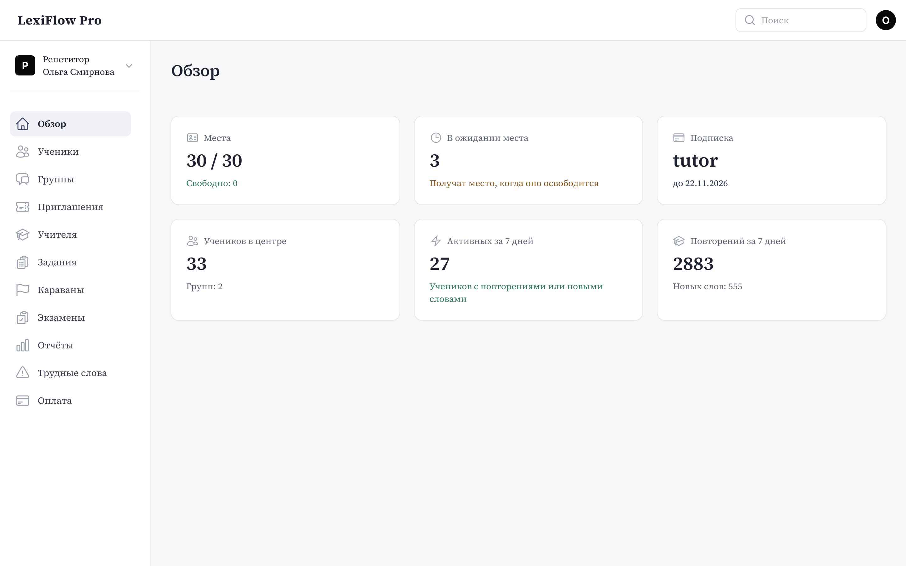
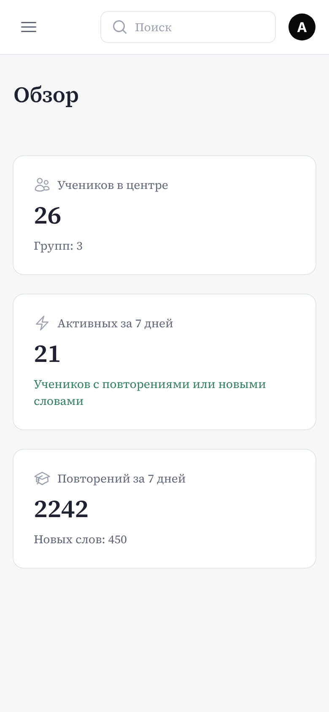
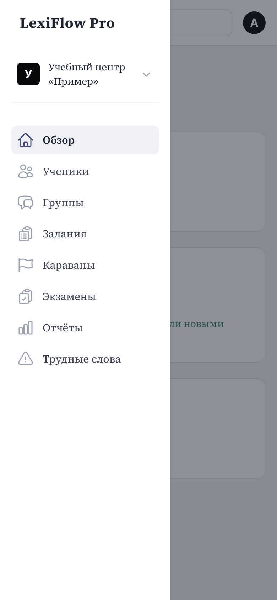

«Обзор» — главная страница кабинета. Здесь видно, сколько учеников занимается и хватает ли мест. Раздел есть у обеих ролей, но цифры разные: владелец видит весь центр, учитель — только свои группы.
| Плитка | Что показывает | Кто видит |
|---|---|---|
| Места | «занято / лимит» и «Свободно: N». Красным — «Превышение лимита: повысьте тариф» или «Нет активной подписки — ученики без Pro» | владелец |
| В ожидании места | сколько учеников ждут места; получат его, когда место освободится | владелец |
| Подписка | код тарифа (tutor, center_s, center_m, center_l) и дата «до …», «Бессрочная» или «Нет активной подписки» | владелец |
| Учеников в центре | действующие участники и число групп | оба (учитель — по своим группам) |
| Активных за 7 дней | ученики с повторениями или новыми словами за неделю | оба |
| Повторений за 7 дней | сумма повторений и новых слов за неделю | оба |
Над плитками у нового центра стоит список «Первые шаги» (глава «Начало работы»).

Кабинет работает в браузере телефона. Меню открывается кнопкой ☰ слева вверху.

